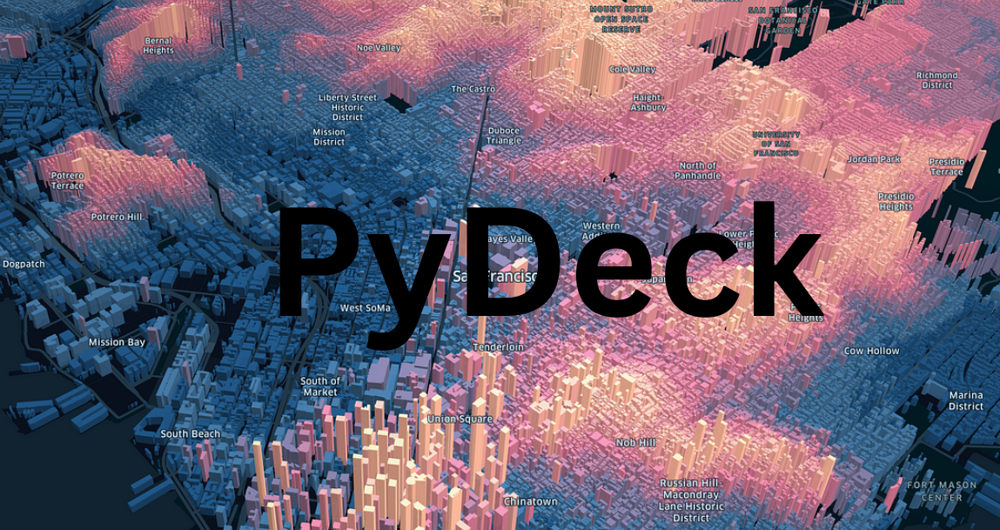
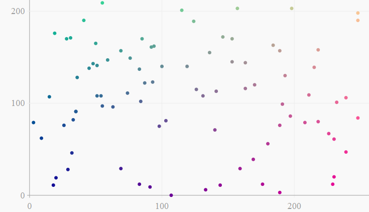
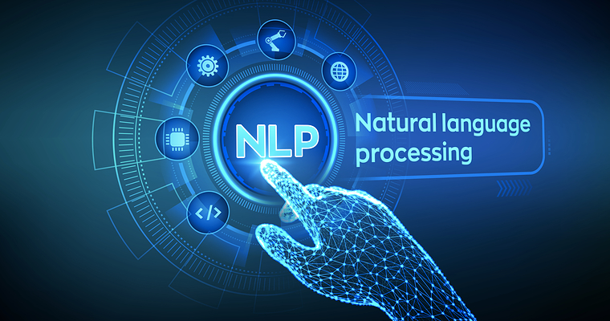

My Blogs

Exploring Geospatial Data with Pydeck: Advanced Visualizations
 GeeksForGeeks · Jul 1, 2024
GeeksForGeeks · Jul 1, 2024
Creating Interactive 3D Visualizations using PyVista
GeeksForGeeks · Jul 1, 2024

Visualizing Data with Python’s Leather Library
GeeksForGeeks · Jun 26, 2024
Introduction to pyNLPl: Streamlining NLP Workflows with Python
GeeksForGeeks · Jun 27, 2024

Advanced Guide for NLP
 Analytics Vidhya · Jun 5, 2024
Analytics Vidhya · Jun 5, 2024
Data Cleaning with PyJanitor
GeeksForGeeks · Jun 3, 2024
Build Script Generator using Gen AI
Analytics Vidhya · May 26, 2024
3D Visualization with Mayavi in Python
GeeksForGeeks · May 22, 2024

Flight Delay Prediction using DL
GeeksForGeeks · May 22, 2024

Build DL based Lyrics Generator
GeeksForGeeks · Apr 23, 2024
Build DL based Medical Diagnoser
GeeksForGeeks · Mar 25, 2024

How to Build a Food Quality Detector?
Analytics Vidhya · Mar 19, 2024
Deep Learning in Agriculture
Analytics Vidhya · Mar 3, 2024

Revolutionizing Agriculture with Generative Chatbots (Research Paper)
IRJMETS · Jan 1, 2024

Generative AI in Recipe Generation
Analytics Vidhya · Sep 29, 2023

Generative AI in Film and Entertainment
Analytics Vidhya · Sep 4, 2023
How to Deal with Sparse Datasets?
Analytics Vidhya · Jul 27, 2023
Anomaly Detection on Google Stock Data 2014-2022
Analytics Vidhya · Feb 25, 2023
How to Build a Real Estate Price Prediction Model?
Analytics Vidhya · Feb 4, 2023